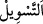
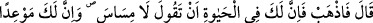
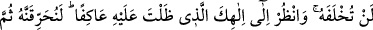
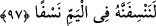

el-Arâis’te şöyle der: “Sâmirî, elçinin atının izinden bir avuç toprak aldı. Çünkü o,
Mûsâ (a.s.)’dan kudsî şeylerin yaratılmışların vücudlarına tesir edeceğini duymuştu. Bu
sebeple aldığı toprağı, altından buzağı heykelinin üzerine saçtı. Cenâb-ı Hak da kendi
fiilinin nûru ile onda bir iksîr yarattı. Böylece buzağı canlandı.”
et-Te’vîlâtü’n-Necmiyye’de der ki: “…gördüm” yani Cebrâil’in atının bastığı yerde
fışkıran hayatı görme kerâmeti, sadece bana tahsis edildi. Bunda bir iş olduğu bana
ilhâm edildi. Bu, benim dışımda sizden hiç kimseye verilmeyen bir ayrıcalıktır. “(O)
elçinin ayak bastığı yerden bir avuç (toprak) aldım, onu (eritilmiş mücevherâtın
içine) attım.” Bu cümle, şu mânâya işâret etmektedir: “Kerâmet ehlinden sâdır olan
hârikulâde şeyler kerâmettir, sapıklık içinde olanlar içinse fitne ve istidrâcdır. Bu iki
fırka arasındaki fark şudur: Kerâmet ehli bunu hak ve hakîkat için kullanırlar. Sapıklar
ise bâtıl ve tabîat uğrunda kullanırlar. Nitekim Allah Teâlâ Sâmirî’ye bu fâsid ve bâtıl
niyetini şöyle söyletmiştir:
“Bunu böyle nefsim bana” şakâvetimi ve mihnetimi“hoş gösterdi” dedi.”
“
” nefsin kişinin hırs gösterdiği şeyi ona süslemesi, onlardan çirkin olanları
güzel sûrette tasvir etmesidir. Yâni hayat atının izinden toprak alma ve onu eriyen
mücevheratın içine atma gibi bu yaptığım işleri nefsim bana çok süslü gösterdi ve bu
sebeple öyle yaptım. Sâmirî’nin cevabının özeti, aklî bir delil ve ilâhî bir ilhamla değil,
sırf kötülüğü çok emreden nefsinin hevâsına ve iğvâsına tâbi olarak bu işi yaptığıydı.
Kâşifî der ki: “Lübâb’da nakledilir ki Mûsâ (a.s.) Sâmirî’yi katletmeye niyetlendi.
Hak Teâlâ’dan: “Ona ilişme, onda cömertlik sıfatı gâlibdir. Onun cömertliğinden halka
fayda olduğu için hayatının faydasını ondan men etmek mümkün değildir” diye bir nidâ
geldi. Böylece: “İnsanlara fayda veren şeye gelince, o yeryüzünde kalır.” (er-Ra‘d,
13/17) âyetinin sırrı burada zâhir oldu.”
Yaprağı ve meyvesi olan her ağaç dalı,
Hayat suyundan ter ü tâze olsun.
Meyvesiz ve gölgesiz ağacı,
Ocağa sermaye yapmak iyidir.
97. Mûsâ dedi ki: “Defol, artık hayatın boyunca sen “Bana dokunmayın!”
diyeceksin. Ayrıca senin için, kurtulamayacağın bir ceza günü var. Tapmakta
olduğun ilâhına da bak! Yemin ederim, biz onu yakacağız; sonra da parça parça
edip denize savuracağız!